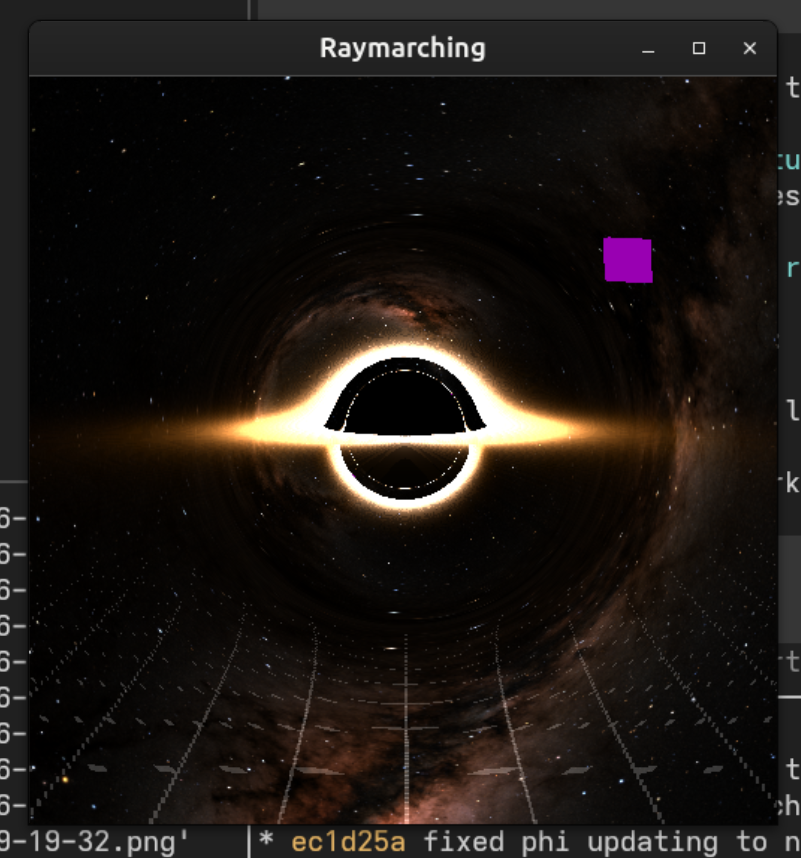
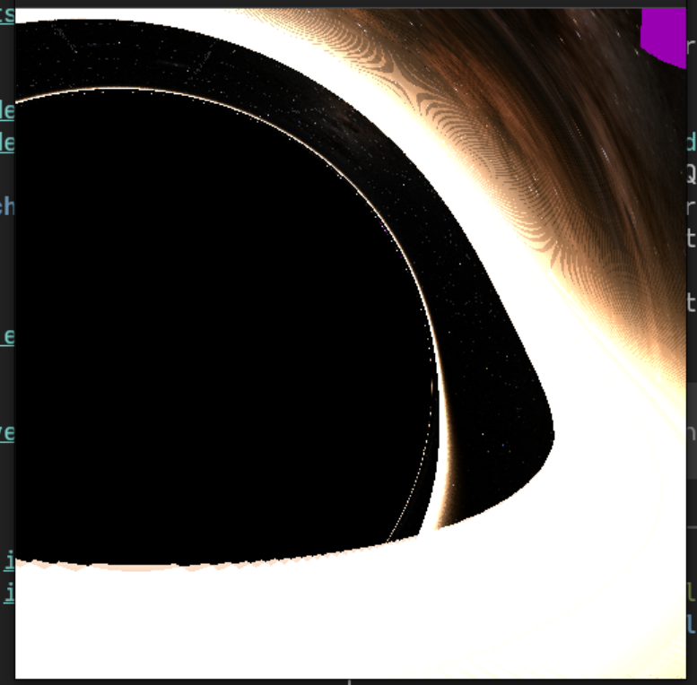
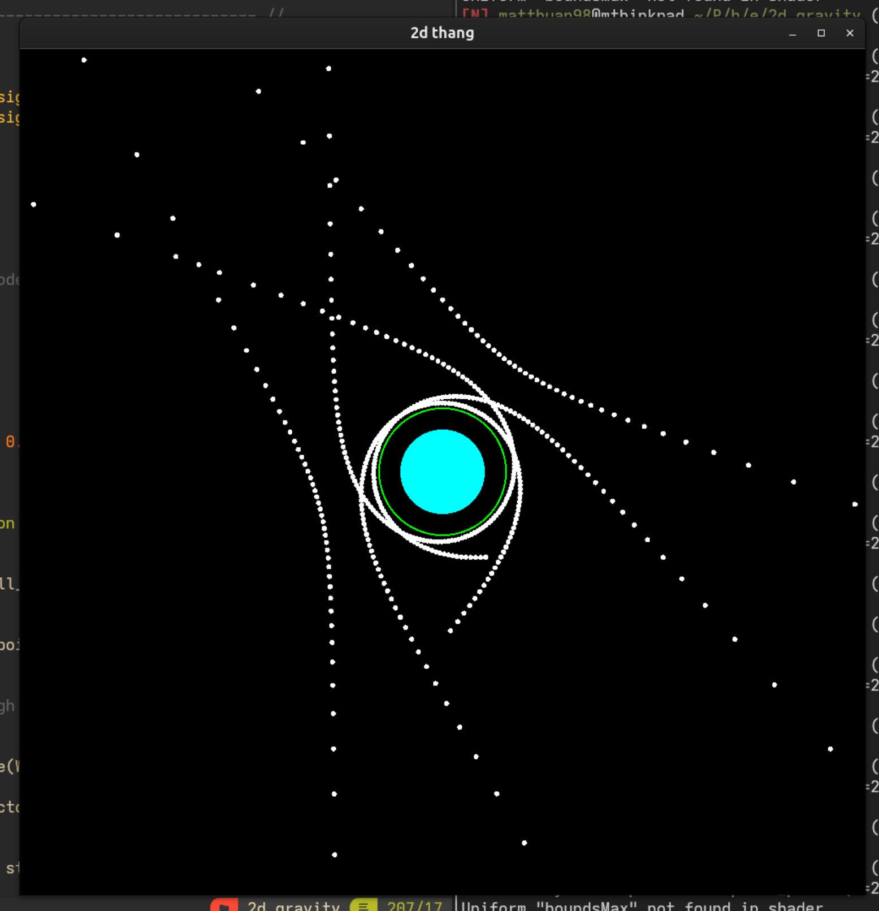

Black Hole Visualizer
programming
Black hole raymarcher from scratch using C++, SFML, and GLSL
Introduction
How it works
- TODO write more better explanation, tex up derivation
- Using C++, SFML, and GLSL
- my first C++ and graphics AND physics project so please forgive strange and bad design choices
- The simulation marches a grid of light rays (one per pixel) from the camera and numerically approximates the null geodesic equations for the Schwarzschild metric. The light rays curve and hit objects, which determine the color of the pixel.
- numerical approximation is done via RK4 with adaptive step size
- For efficiency of computation, and accurate due to spherical symmetry of the SC spacetime, null geodesics are computed in 2D on the equator and rotated into place in 3D.
Progress pictures
 
- Added background stars
- Made disk color more realistic: calculate temperature -> approximate black body radiation -> color
- More realistic disk sizing, note that the photon ring is now visible!
 - Added adaptive step sizing and other optimizations - Fixed object edge rendering for arbitrary step size - Added prettier colors and a grid to see how spacetime curves
- Added adaptive step sizing and other optimizations - Fixed object edge rendering for arbitrary step size - Added prettier colors and a grid to see how spacetime curves

- Implementing RK4 for the null geodesic equations in 3D.
- Parallelized everything via fragment shader, which was quite difficult, as debugging information could only be encoded through pixel color. I’ve since learned that I should have used a compute shader and passed to a simple fragment shader, which would have been easier to debug and manage.

- Derived the null geodesic equations in 2D via Lagrangian, here I learned the basics of general relativity.
- Implemented RK4 for numerically solving said equations.

- Built basic euclidean raymarching engine.
- More of learning how to program in C++.

- Drew a circle!
- Learned the very basics of C++, SFML, and GLSL.
Context
I started this project independently to learn C++, shader programming, and touch on general relativity. It took about a month and is so far the most difficult project I’ve mostly completed. I plan to develop more but am really tired of thinking about this project for now.
- I learned C++ with this wonderful free book.
- I learned general relativity with Sean Carrol’s Spacetime and Geometry, which can be acquired through allegedly legal means.
- I was inspired to start this project by this cool video, although did not look at any of his code, and used a different derivation for the geodesic equations. I was also more generally inspired by Sebastian Lague’s very cool youtube channel to try shader programming.
Future work:
- the center of the bh has trouble rendering bc parameterizing with phi, make step size also adjust for phi
- if you move, your camera magically turns on its own, because I’ve yet to implement parallel transport of the camera directions, yet
- accretion disk adjustments
- its shape should be flared out a little for more realism
- needs to use intersections fully, right now is detected a little hackily